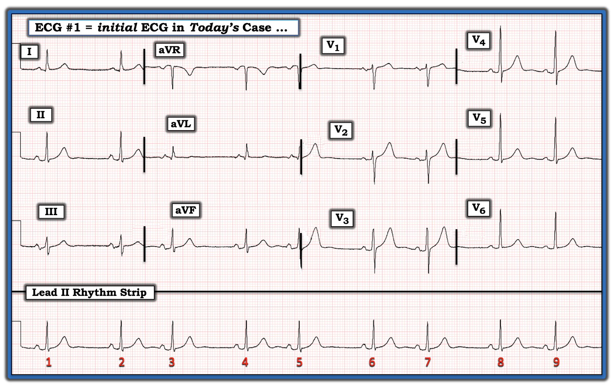
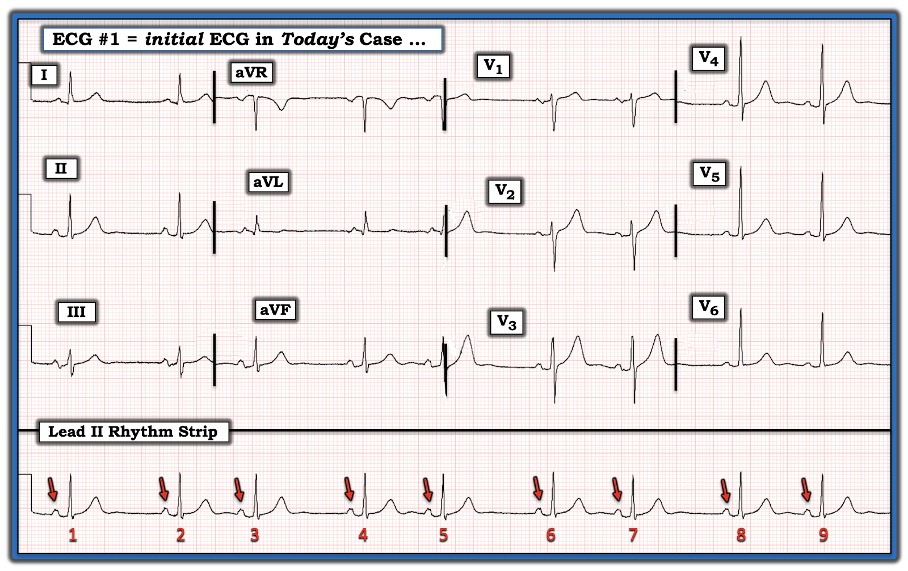
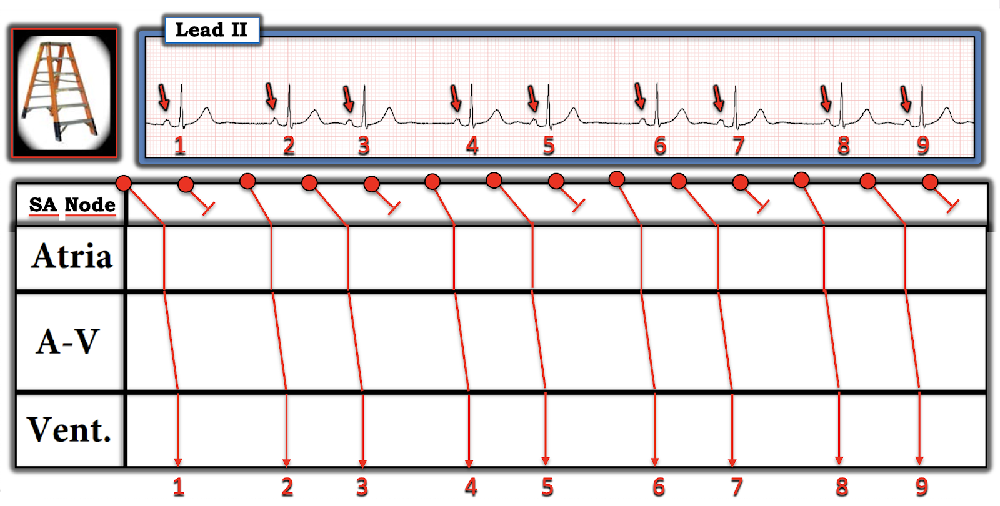
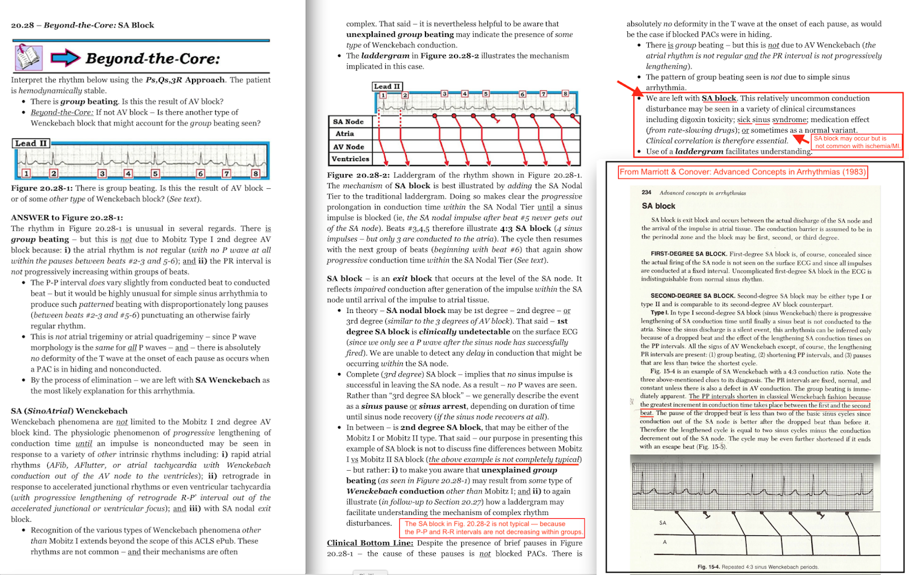

ECG Blog #542 — Vì sao nhịp không đều?
Điện tâm đồ ở Hình 1 được ghi từ một người đàn ông ở độ tuổi 60 — ông biết mình có "nhịp tim không đều".
Tiền sử liên quan:
- Nhìn chung bệnh nhân khỏe mạnh — ngoại trừ một số "vấn đề về thận", vì vậy ông thỉnh thoảng bị "kali thấp" và có khám bác sĩ chuyên khoa thận.
- Bệnh nhân nhận thấy các "nhát hụt" của mình có xu hướng tăng lên khi nằm — và thường hết đi khi đứng dậy.
CÂU HỎI:
- Đọc nhịp ở Hình 1 như thế nào?
- Chẩn đoán phân biệt của bạn cho tình trạng nhịp không đều này là gì?
- Điện tâm đồ 12 chuyển đạo giúp ích gì trong chẩn đoán nhịp này?


TRẢ LỜI:
Theo Ps, Qs, 3R Approach để đọc nhịp một cách hệ thống (Xem ECG Blog #185) — tôi ghi nhận những điểm sau:
- QRS hẹp ở mọi chuyển đạo. Điều này cho biết nhịp có nguồn gốc trên thất.
- Tần số (Rate) được kiểm soát, trung bình ~60/phút — nhưng nhịp không đều (Regular). Thay vào đó là một nhịp đôi (bigeminal) (tức là cứ cách một nhát lại có một nhát đến sớm — nên ta thấy một kiểu lặp lại gồm các nhóm 2 nhát, sau mỗi nhóm là một khoảng ngưng ngắn). Xem ECG Blog #232 để biết thêm về các loại nhịp đôi.
- Có sóng P. Các sóng P này đi trước mỗi nhát trong 9 nhát ở chuyển đạo II dài (như các mũi tên ĐỎ trên dải nhịp chuyển đạo II dài ở Hình 2).
- Các sóng P này có "Related" (liên quan) với các phức bộ QRS kế cận — vì khoảng PR trước mỗi phức bộ QRS là hằng định (đồng thời cũng bình thường = không dài quá 1 ô lớn).


Chẩn đoán phân biệt của chúng ta:
Chúng ta đã đi đến một tình huống tương đối thường gặp: có một nhịp đôi (bigeminal rhythm) — trong đó mọi phức bộ QRS đều có sóng P đi trước, và các sóng P này có vẻ được dẫn truyền vì chúng có khoảng PR hằng định. Đến đây — các khả năng chẩn đoán tôi cân nhắc như sau:
- Nhịp đôi nhĩ (trong đó cứ cách một nhát lại có một PAC). Tôi cho rằng khả năng này thấp — vì khi nhìn tất cả 12 chuyển đạo trên điện tâm đồ ghi đồng thời phía trên dải nhịp chuyển đạo II dài — hình dạng sóng P có vẻ giống hệt nhau ở các nhát đến sớm ( = các nhát #1,3,5,7,9) — và ở các nhát dẫn truyền từ xoang bình thường ( = các nhát #2,4,6,8). Vì PAC xuất phát từ một vị trí khác trong tâm nhĩ — hình dạng sóng P của PAC phải khác với hình dạng sóng P dẫn truyền từ xoang bình thường (và ở Hình 2 thì không khác).
- Nhịp ba nhĩ với PAC bị blốc (tức là cứ mỗi nhát thứ 3 là một PAC không dẫn truyền). Khả năng này cũng thấp, vì khi nhìn tất cả 12 chuyển đạo trên điện tâm đồ phía trên chuyển đạo II dài — sóng T của các nhát #1,3,5,7,9 không có bất kỳ chỗ khía hay đỉnh nhọn thêm nào gợi ý sóng P ẩn không dẫn truyền.
- Blốc AV độ 2 Mobitz I (cũng chính là Wenckebach AV) không có mặt vì: i) Khoảng PR không tăng dần trong mỗi nhóm 2 nhát; — và, ii) Khoảng P-P không đều (hoặc ít nhất là gần đều) — như lẽ ra phải thế nếu có blốc AV.
- Blốc AV độ 2 Mobitz II không có mặt. Đó là vì khoảng P-P không đều (hoặc ít nhất là gần đều) — như lẽ ra phải thế nếu có một dạng blốc AV nào đó.
- Loạn nhịp xoang cũng ít có khả năng. Đó là vì nhịp ở Hình 2 thể hiện một kiểu nhịp theo nhóm (group beating) cố định, trong đó thời gian của từng khoảng R-R dài và từng khoảng R-R ngắn đều hằng định một cách đáng chú ý. Ngược lại — với loạn nhịp xoang, mức chênh lệch thời gian giữa các khoảng R-R thường lớn hơn và biến thiên nhiều hơn hẳn so với những gì ta thấy ở Hình 2.
- Blốc SA (xoang nhĩ – SinoAtrial) . . .
Kết luận: Sau khi đã loại trừ 5 khả năng chẩn đoán hàng đầu mà tôi liệt kê ở trên — chúng ta còn lại khả năng cuối cùng trong danh sách của tôi = Blốc SA!
- Lý do tôi xếp blốc SA cuối danh sách — là vì blốc SA thực sự là thực thể ít gặp nhất trong số các thực thể trên mà tôi từng gặp. Dù vậy — nó "phù hợp nhất" với các đặc điểm của điện tâm đồ hôm nay.
- Giản đồ bậc thang (laddergram) tôi đề xuất ở Hình 3 minh họa cơ chế có vẻ là nguyên nhân của blốc SA ở bệnh nhân này.


Minh họa bằng giản đồ bậc thang:
Tôi ôn lại cách đọc giản đồ bậc thang (đồng thời trình bày hướng dẫn nhập môn về cách vẽ chúng) — cùng nhiều ví dụ về giản đồ bậc thang trong ECG Blog #188.
- Như tôi minh họa trong Blog #188 — đọc những giản đồ bậc thang đã được vẽ sẵn cho bạn là việc DỄ. Tất cả những gì giản đồ bậc thang làm — là theo dõi xung điện khi nó ghi lại nhịp tim, cho thấy đường đi của hoạt động điện khi xung điện lần lượt đi qua Tâm nhĩ — rồi qua Nút AV — và cuối cùng qua Tâm thất.
- Trong ca hôm nay, vì cơ chế của nhịp là Blốc SA — vấn đề nảy sinh từ bên trong nút SA.
Chúng tôi thể hiện điều này dưới dạng sơ đồ ở Hình 3:
- Bắt đầu từ nhát #2 — ta thấy chỉ 2 trong mỗi 3 xung của nút SA ( = các vòng tròn ĐỎ ở trên cùng của giản đồ bậc thang) — đi qua được nút SA để đến tâm nhĩ.
- Lưu ý rằng trên giản đồ bậc thang thời gian được ghi theo chiều ngang — ta có thể thấy một khi xung đã đến tâm nhĩ thì dẫn truyền nhanh lên. Chúng tôi thể hiện điều này bằng sơ đồ qua việc vẽ các đường ĐỎ đi qua Tầng Nhĩ theo chiều thẳng đứng (biểu thị dẫn truyền nhanh qua các sợi chuyên biệt của tâm nhĩ).
- Sau đó dẫn truyền chậm lại khi xung điện rời tâm nhĩ và đi qua Tầng Nút AV (chính sự chậm dẫn truyền này giải thích độ nghiêng tăng nhẹ của các đường ĐỎ trong Tầng Nút AV).
- Khi đến tâm thất — dẫn truyền lại nhanh lên nhờ dẫn truyền nhanh qua các sợi His-Purkinje chuyên biệt (khiến các đường ĐỎ ít nghiêng hơn trong Tầng Thất).
Hãy quay lại một chút với Tầng Nút SA ở trên cùng của giản đồ bậc thang:
- Lưu ý độ nghiêng tăng dần giữa vòng tròn ĐỎ thứ 1 và thứ 2 trong mỗi nhóm — còn vòng tròn ĐỎ thứ 3 thì bị blốc — sau đó chuỗi bắt đầu lại. Điều này biểu thị dẫn truyền kiểu Wenckebach! (tức là có blốc SA 3:2 dạng Wenckebach).
- Để biết thêm về Blốc SA — Xem PHẦN BỔ SUNG bên dưới!
Đối chiếu lâm sàng trong CA BỆNH hôm nay:
Quay lại phần tiền sử ngắn gọn được nêu ở đầu ca này — chúng ta được biết bệnh nhân hôm nay có tiền sử hạ kali máu — và ông nhận thấy các "nhát hụt" có xu hướng tăng lên khi nằm, và hết đi khi đứng dậy.
- Theo kinh nghiệm của tôi qua nhiều thập kỷ tìm kiếm những ví dụ thực sự về blốc SA — hiện tượng blốc SA không thường gặp trong dân số chung.
- Đôi khi tôi gặp blốc SA tình cờ, dường như không có hệ quả lâm sàng (gần như một biến thể bình thường).
- Những lúc khác, nhịp này rõ ràng là bệnh lý — đi kèm nhồi máu thành dưới với blốc AV độ 2 dạng Wenckebach (Mobitz I) — hoặc — là một thành phần của các rối loạn nhịp gặp trong SSS (hội chứng suy nút xoang – Sick Sinus Syndrome).
- Trong ca hôm nay — tôi nghi ngờ rằng tình trạng hạ kali máu từng đợt của bệnh nhân ít nhất đã góp phần vào sự xuất hiện blốc SA, nếu không phải là nguyên nhân trực tiếp.
- Theo dõi Holter cho thấy blốc SA của bệnh nhân này không gây hệ quả huyết động, dù tồn tại dai dẳng trong phần lớn ngày và đêm ghi Holter. Tôi không có thông tin theo dõi tiếp để biết nhịp có hết đi khi K+ huyết thanh trở về bình thường hay không.
- Ngoài ra — một số bệnh nhân có rối loạn nhịp tim đã được ghi nhận là thấy tần suất của một số rối loạn nhịp thay đổi tùy theo tư thế cơ thể (Grauer và cs. — Fam Prac Recert 12(9):32, 1990). Hiệu ứng này mang tính cá thể rất cao — y văn về chủ đề này rất ít, và cơ chế chưa rõ. Các giả thuyết gồm thay đổi trương lực phế vị, vốn có xu hướng tăng khi nằm ngửa nghỉ ngơi. Các giả thuyết khác liên quan đến thay đổi áp lực trong lồng ngực xảy ra khi thay đổi tư thế cơ thể — và/hoặc sự "căng giãn" mô tim tăng lên, dường như dễ xảy ra hơn khi nằm ngửa.
- Điều cốt lõi: Thật khó biết nên làm gì với tiền sử bệnh nhân kể về sự thay đổi tần suất rối loạn nhịp tùy theo tư thế cơ thể — ngoài việc chấp nhận rằng ở một số bệnh nhân chọn lọc, có bằng chứng cho thấy rối loạn nhịp có thể tăng hoặc giảm tùy theo tư thế cơ thể.
==================================
Lời cảm ơn: Xin cảm ơn Stewart (từ Los Angeles, Hoa Kỳ) — đã cho phép tôi sử dụng ca bệnh và bản ghi này.
==================================

PHẦN BỔ SUNG:


============================
Các bài ECG Blog liên quan đến ca hôm nay:
- ECG Blog #312 và ECG Blog #488 — để xem thêm các ví dụ về blốc SA.
- ECG Blog #147 — Bàn về một ca có PAC bị blốc.
- ECG Blog #57 — Bàn về một ca có nhịp đôi nhĩ với PAC bị blốc.